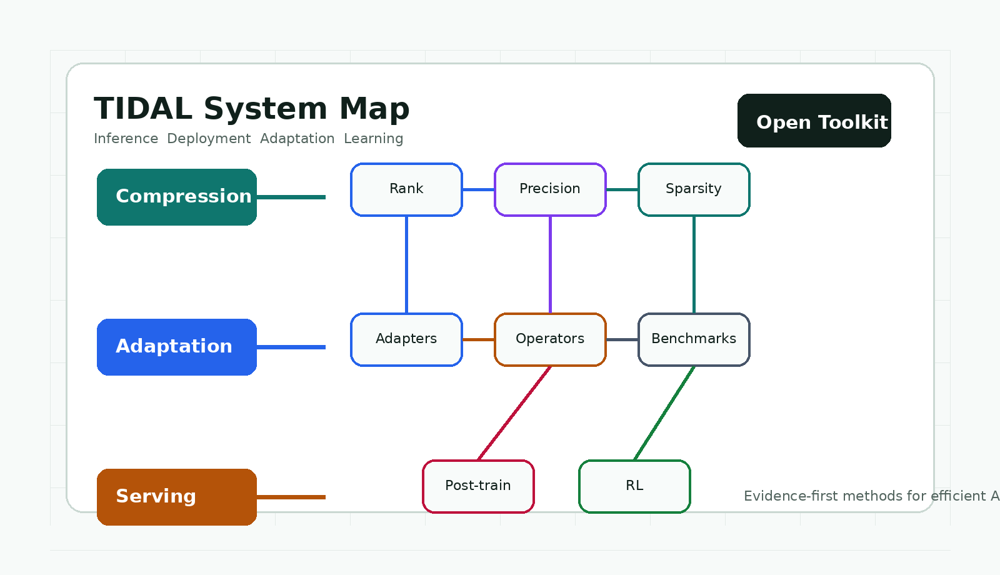

QPruner
Probabilistic decision quantization for structured LLM pruning.
Toolkit for Inference, Deployment, Adaptation, and Learning
Open infrastructure for efficient AI systems: compression, adaptation, serving, post-training, and future RL workflows.

Method wave
Probabilistic decision quantization for structured LLM pruning.
Hierarchical LoRA rank allocation for fine-tuning pruned models.
Operator optimization for multi-tenant LoRA serving.
Mixed-precision fine-tuning aligned with linguistic hierarchies.
Joint optimization of quantization and low-rank adapters.
Coupled global rank and sparsity optimization for LLM compression.
Scope
Roadmap
Manifest validation, submodule integration, local artifact policy, and reproducibility plans.
CPU-testable allocation, pruning, precision, and export utilities backed by focused tests.
Benchmarks and efficient training workflows routed through reproducible GPU execution.